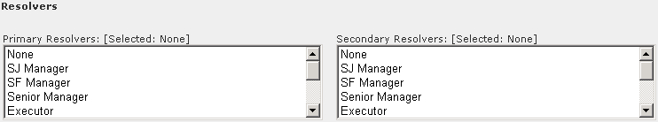

Timogen Web Site
Voice: (650) 903-9888
Fax: (650) 903-9327
info@timogen.coms
Event Alert Resolvers
In the Resolvers section, you select one or more primary and secondary resolver roles. A Resolver has the ability to change the status of an alert and initiate and control its resolution process. Any users who is a member of either role can be a resolver for this alert. At least one user must be a member of any selected role.A Primary Resolver must be assigned before any level of alert can be enabled.

|
|
Timogen Systems Timogen Web Site Voice: (650) 903-9888 Fax: (650) 903-9327 info@timogen.coms |